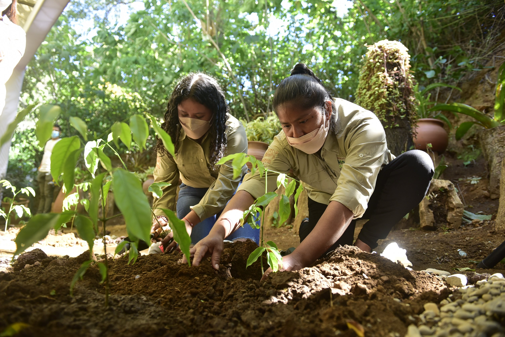

Plantar árboles en Nicaragua
Nicaragua es un país rico en biodiversidad y la plantación de árboles juega un papel importante en la conservación del medio ambiente y la lucha contra el cambio climático. Aquí encontrarás información sobre la importancia de plantar árboles y cómo puedes contribuir:
Beneficios de plantar árboles
- Ayuda a combatir el cambio climático al absorber dióxido de carbono y liberar oxígeno.
- Contribuye a la conservación de la biodiversidad, proporcionando hábitats para diversas especies de plantas y animales.
- Ayuda a prevenir la erosión del suelo y mejora la calidad del agua al actuar como filtro natural.
- Proporciona sombra y ayuda a reducir la temperatura en áreas urbanas.
- Fomenta la participación comunitaria y el sentido de pertenencia.
Cómo plantar un árbol
- Elige una especie de árbol nativa o adecuada para el clima y suelo de la región.
- Prepara un hoyo lo suficientemente grande y profundo para las raíces del árbol.
- Coloca el árbol en el hoyo, asegurándote de que esté vertical y las raíces estén extendidas.
- Rellena el hoyo con tierra y compacta suavemente alrededor del árbol.
- Riega adecuadamente y añade mantillo alrededor del árbol para conservar la humedad.
- Mantén el árbol bien cuidado, regándolo regularmente y protegiéndolo de plagas y enfermedades.

Organizaciones y programas de plantación de árboles en Nicaragua
En Nicaragua, existen varias organizaciones y programas dedicados a la plantación de árboles y la conservación del medio ambiente. Algunas de ellas son: